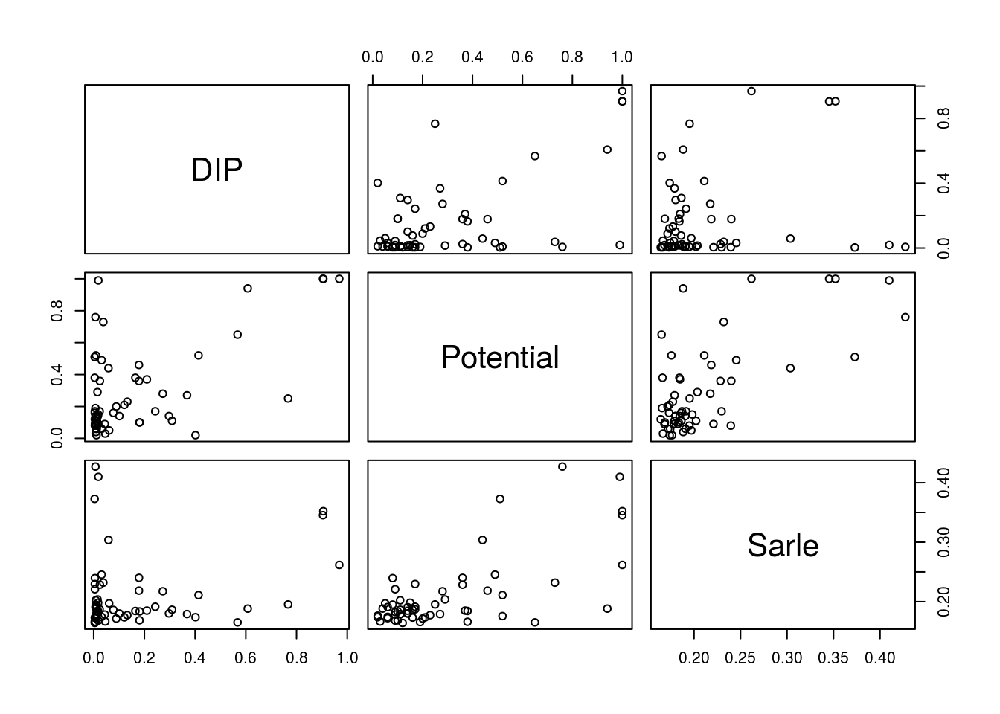
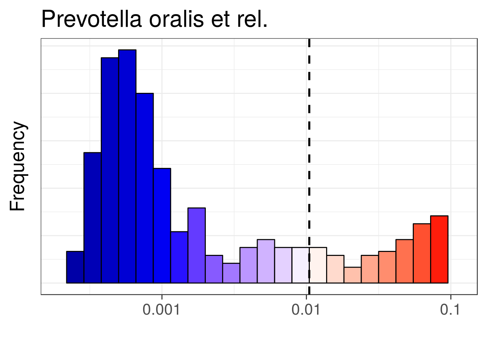
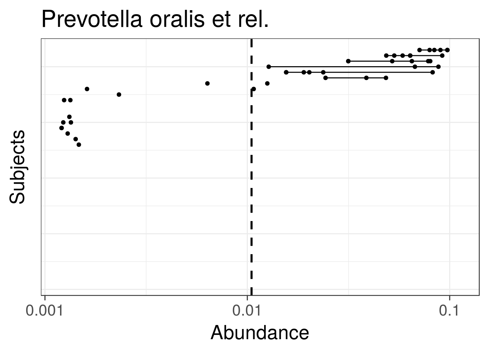

Bimodality analysis
Bimodality analysis
Get example data - HITChip Atlas of 130 genus-like taxa across 1006 healthy western adults. A subset of 76 subjects have also short time series available for temporal stability analysis:
# Load the example data
library(microbiome)
data(atlas1006)
# Rename the example data
pseq <- atlas1006
# Focus on specific DNA extraction method
pseq <- pseq %>% subset_samples(DNA_extraction_method == "r")
# Keep prevalent taxa (HITChip signal >3 in >20 percent of the samples)
pseq <- core(pseq, detection = 10^3, prevalence = .2)
# Use relative abundances
pseq <- transform(pseq, "compositional")
# For cross-sectional analysis, include
# only the zero time point:
pseq0 <- subset_samples(pseq, time == 0)Bimodality indicators
Bimodality of the abundance distribution provides an indirect indicator of bistability, although other explanations such as sampling biases etc. should be controlled. Multiple bimodality scores are available.
Multimodality score using potential analysis with bootstrap
# Bimodality is better estimated from log10 abundances
pseq0.log10 <- transform(pseq0, "log10")
bimodality.pb <- bimodality(pseq0.log10, method = "potential_analysis")Sarle’s bimodality coefficient:
bimodality.sarle <- bimodality(pseq0.log10, method = "Sarle.finite.sample")DIP test is another standard multimodality test, available via the diptest package. Use the 1-p as the score here
library(diptest)
bimodality.dip <- apply(abundances(pseq0.log10), 1, function (x) {1 - unname(dip.test(x)$p.value)})Compare the alternative bimodality scores
b <- cbind(DIP = bimodality.dip, Potential = bimodality.pb, Sarle = bimodality.sarle)
pairs(b)
Visualize population densities for unimodal and bimodal groups
# Pick the most and least bimodal taxa as examples
bimodality <- bimodality.pb
unimodal <- names(sort(bimodality))[[1]]
bimodal <- rev(names(sort(bimodality)))[[1]]
# Visualize population frequencies
library(ggplot2)
theme_set(theme_bw(20))
p1 <- plot_density(pseq, variable = unimodal, log10 = TRUE)
p2 <- plot_density(pseq, variable = bimodal, log10 = TRUE)
library(gridExtra)
library(ggplot2)
grid.arrange(p1, p2, nrow = 1)
Tipping point detection
Identify potential minima in cross-section population data as tipping point candidates (note that longitudinal analysis would be necessary to establish bistability).
# Log10 abundance for a selected taxonomic group
tax <- bimodal
# Detect tipping points detection at log10 abundances
x <- log10(abundances(pseq)[tax,])
# Bootstrapped potential analysis to identify potential minima
set.seed(3432)
potential.minima <- potential_analysis(log10(abundances(pseq)[tax,]))$minima
# Same with earlywarnings package (without bootstrap ie. less robust)
# library(earlywarnings)
# res <- livpotential_ews(x)$min.points
# Identify the potential minimum location as a tipping point candidate
# and cast the tipping back to the original (non-log) space:
tipping.point <- 10^potential.minima
print(tipping.point)## [1] 0.01049229Variation lineplot and bimodality hotplot
Pick subset of the HITChip Atlas data set and plot the subject abundance variation lineplot (Variation tip plot) and Bimodality hotplot for a given taxon as in Lahti et al. 2014. The bi-stable Dialister has bimodal population distribution and reduced temporal stability within subjects at intermediate abundances.
# Bimodality hotplot:
# Consider a unique sample from each subject: the baseline time point
p <- hotplot(pseq0, tax, tipping.point = tipping.point)
print(p)
pv <- tipplot(pseq, tax, tipping.point = tipping.point)
print(pv)
## [1] "ade4"
## [1] "compositions"
## [1] "MASS"
## [1] "moments"
## [1] "scales"
## [1] "tgp"
## [1] "WGCNA"
## [1] "diptest"
## [1] "FD"
## [1] "gcookbook"
## [1] "GGally"
## [1] "ggnet"
## [1] "Hmisc"
## [1] "hrbrthemes"
## [1] "igraph"
## [1] "intergraph"
## [1] "limma"
## [1] "lme4"
## [1] "netresponse"
## [1] "network"
## [1] "RColorBrewer"
## [1] "sna"
## [1] "SpiecEasi"
## [1] "tidyverse"
## [1] "viridis"